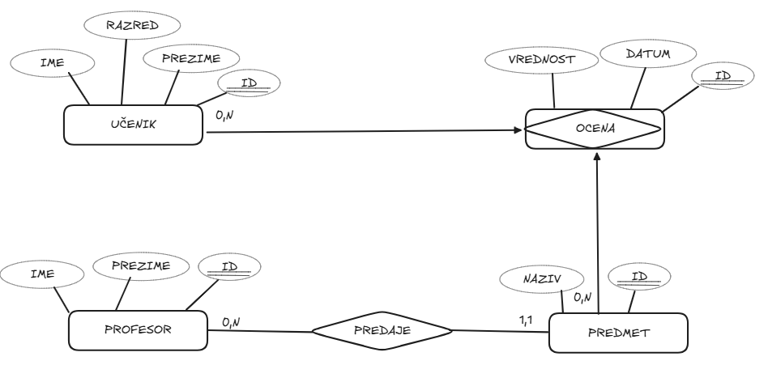

Pravljenje ER dijagrama (mini projekat)
U prethodnim lekcijama upoznali smo sve osnovne elemente potrebne za izradu ER dijagrama. Naučili smo šta su tipovi entiteta, atributi i relacije, kako se određuju tipovi relacija, kao i kako se precizno definišu kardinalnost i opcionalnost.
Takođe smo videli da relacije mogu imati različite oblike, uključujući osnovne, n-arne, rekurzivne i situacije u kojima uvodimo gerund. Sada je vreme da sve to primenimo u praksi i napravimo prvi kompletan ER dijagram.
Opis realnog sistema koji ćemo modelovati
U ovoj lekciji ćemo definisati jednostavan informacioni sistem za školu koji će služiti kao osnova za dalji rad kroz ceo kurs. Važno je da sistem bude dovoljno jednostavan da ga razumemo, ali i dovoljno bogat da obuhvati sve ključne koncepte koje smo naučili.
Zamislimo informacioni sistem za školu u kojem želimo da pratimo učenike, profesore, predmete i ocene. U ovom sistemu svaki učenik ima svoje osnovne podatke, kao što su ime, prezime i razred. Svaki profesor ima ime i prezime, a svaki predmet ima svoj naziv.
Kako iz ovakvog opisa realnog sistema dolazimo do pravilnog ER dijagrama? Kako da prepoznamo koje tipove entiteta crtamo, koje atribute dodajemo i na koji način povezujemo delove sistema?
Objašnjenje kroz mini projekat
Jedan Učenik može pohađati više Predmeta. Sa druge strane, jedan Predmet može biti slušan od strane više Učenika. Ova veza predstavlja relaciju više prema više.
Pored toga, jedan Profesor može predavati više Predmeta. Svaki predmet predaje tačno jedan Profesor. Ovo je relacija jedan prema više.
Sada dolazimo do važnog dela sistema. Potrebno je da zabeležimo ocene koje učenici dobijaju iz predmeta. Kao što smo ranije videli, relacija između tipa entiteta Učenik i tipa entiteta Predmet sama po sebi nije dovoljna jer želimo da čuvamo dodatne informacije, kao što su vrednost ocene i datum kada je ocena dodeljena.
Zbog toga uvodimo novi tip entiteta, koji možemo nazvati Ocena. Ovaj tip entiteta predstavlja gerund, jer nastaje iz relacije između tipa entiteta Učenik i tipa entiteta Predmet. Svaka pojava tipa entiteta Ocena povezana je sa tačno jednom pojavom tipa entiteta Učenik i tačno jednom pojavom tipa entiteta Predmet. Pored toga, svaka ocena ima svoje atribute, kao što su vrednost i datum.
Na ovaj način rešavamo problem relacije više prema više tako što uvodimo novi tip entiteta koji omogućava da relacija ima svoje atribute i učestvuje u daljem modelovanju.
Sada možemo preći na opis kako se ovaj sistem predstavlja na ER dijagramu.
Na dijagramu ćemo imati sledeće tipove entiteta: Učenik, Profesor, Predmet i Ocena. Svaki od ovih tipova entiteta prikazuje se kao pravougaonik sa svojim nazivom.
Tip entiteta Učenik ima atribute ime, prezime i razred. Tip entiteta Profesor ima atribute ime i prezime. Tip entiteta Predmet ima atribut naziv. Tip entiteta Ocena ima atribute vrednost i datum.
| Tip entiteta |
Atributi |
Uloga u modelu |
| Učenik |
ime, prezime, razred |
Predstavlja učenike koje škola evidentira |
| Profesor |
ime, prezime |
Predstavlja nastavnike koji predaju predmete |
| Predmet |
naziv |
Predstavlja školske predmete |
| Ocena |
vrednost, datum |
Predstavlja gerund nastao iz veze učenika i predmeta |
Zatim definišemo poveznike između ovih tipova entiteta.
Između tipa entiteta Profesor i tipa entiteta Predmet postoji poveznica koja predstavlja relaciju predavanja. Jedna pojava tipa entiteta Profesor može biti povezana sa više pojava tipa entiteta Predmet, dok svaka pojava tipa entiteta Predmet mora biti povezana sa tačno jednom pojavom tipa entiteta Profesor.
Između tipa entiteta Učenik i tipa entiteta Predmet postoji poveznica koja znači da učenik ima ocene iz tog predmeta. Ovaj tip poveznika ćemo nazvati Ocena, a kako bismo mu dodali atribute, reći ćemo da je ovaj tip poveznika ustvari gerund i Ocena postaje entitet koji se dalje može razradjivati u modelovanju.
| Poveznica |
Kardinalnost i opcionalnost |
Objašnjenje |
| Profesor - Predmet |
Profesor 1..N, Predmet 1..1 |
Jedan profesor predaje više predmeta, a svaki predmet ima tačno jednog profesora |
| Učenik - Predmet |
Učenik 0..N, Predmet 0..N |
Učenik može imati nijednu ili više ocena iz nekog predmeta, kao i što za svaki predmet može imati nijednu ili više ocena različitih učenika |
Važno je primetiti da smo relaciju između tipa entiteta Učenik i tipa entiteta Predmet zamenili tipom entiteta Ocena. Time smo omogućili da ta veza ima svoje atribute i da bude precizno modelovana.
Ako pažljivo pogledaš ovaj model, videćeš da on verno odražava pravila informacionog sistema za školu. Svaki deo sistema ima svoje mesto, a veze između delova su jasno definisane.
U ovom trenutku je najvažnije da razumeš kako se iz opisa realnog sistema dolazi do ER dijagrama. Ne radi se samo o crtanju, već o pravilnom razmišljanju i analizi problema.

Učenici često prave grešku tako što odmah počnu da crtaju dijagram, a da pre toga nisu dovoljno jasno analizirali pravila sistema. Zbog toga se često dešava da izostave važan tip entiteta, pogrešno odrede tip relacije ili zaborave da navedu kardinalnost i opcionalnost.
Posebno obrati pažnju na situacije u kojima relacija ima svoje podatke. Tada nije dovoljno nacrtati samo jednostavnu poveznicu, već treba razmisliti da li je potrebno uvesti novi tip entiteta, kao što je ovde Ocena.
Najava sledeće lekcije
Sada imamo kompletan ER dijagram koji opisuje jedan jednostavan informacioni sistem za školu. To je veoma važan korak, jer smo iz opisa problema došli do modela koji možemo dalje da razvijamo.
U narednim lekcijama ćemo ovaj ER dijagram pretvarati u konkretne tabele i videti kako se model implementira u relacionoj bazi podataka.
Na osnovu opisa iz ove lekcije pokušaj da nacrtaš ER dijagram informacionog sistema za školu.
Dijagram treba da sadrži:
* tipove entiteta sa njihovim atributima
* sve poveznike između tipova entiteta
* jasno naznačenu kardinalnost i opcionalnost za svaku vezu